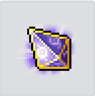

楓之谷M 也許有用的工具
✨ 版本更新？？
- 2026/06/06：新增製作模擬器，混沌扣除太貴了。
- 2026/05/31：來點實用的工具六轉進度計算機。
- 2026/05/30：機率最真實的超越模擬器製作完成。
- 2026/05/24：HEXA屬性模擬器誕生，順便優化了一點手機板的UX。
- 2026/05/23：加了一點HEXA相關功能,少走一點HEXA屬性的冤枉路。
- 2026/05/10：做了一個計算無視防禦的東西。
🛠️ 微調與優化
- 2026/06/36
優化手機版的輸入數值方式。 - 2026/05/30
超越模擬器加入「期望值與實際消耗」即時追蹤系統，並修正獎勵機率計算（最低保底5%）。 - 2026/05/28
優化重置決策模擬，原先只能模擬核心LV10改為LV10~19。 - 2026/05/26
優化目標屬性模擬的策略模式，極端目標更精準。 - 2026/05/25
新增模擬一百萬次的選項讓極端數據更精準。
HEXA屬性模擬器新增強化10次與重置次數統計的功能。 - 2026/05/24
懶人決策表增加主屬性、發生機率、畢業機率可以排序。
🐒 絕對不負責聲明
本工具專為《楓之谷M》(GMSM) 使用（未來可能會長出其他奇怪功能）。
這裡面 99.9% 的程式碼都是 AI (如 Gemini / ChatGPT) 寫出來的！我只是一個「出一張嘴」的非本科小白，主要負責通靈需求、提供公式、還有在旁邊喊加油。
把這些東西一點一滴拼湊成網頁，對我來說挺有趣的。但如果哪天你發現程式碼寫得不夠優雅，或是算出來的機率害你非到懷疑人生......
👉 請深呼吸，放下鍵盤，並在心裡默念：「Pro遊戲」
祝大家超越隨便超，製作隨便過！
⚖️ 版權聲明
本網站為玩家自製的非營利實用工具，僅供社群交流與學習使用。網站內所使用的所有遊戲圖像、圖示、名稱與相關素材，其著作權與商標權皆歸原遊戲公司 (Nexon) 所有。本站並無任何營利行為，若有侵權疑慮，請來信告知，將立即移除相關內容。
雙排無視請先自行加總，HEXA屬性有BUG會有些一點誤差可自行驗證
自訂數值輸入區
航海師套組 (單選)
神秘冥界幽靈套組 (單選)
總無視防禦：0.00%
鐵匠鋪


神秘冥界幽靈天之星光權杖
失敗次數 0 / 7
+

超越石 50%
MAX Lv.30 » MAX Lv.32
最終成功率 50%
(材料50% +現在獎勵機率0%)
失敗時追加獎勵機率
+10%
獎勵機率是因超越失敗而增加的機率。
嘗試超越時，使用的超越石成功機率會高，可獲得更高的獎勵機率。
獎勵機率在已嘗試超越的裝備上可累積到50%，成功時會重置。
嘗試超越時，使用的超越石成功機率會高，可獲得更高的獎勵機率。
獎勵機率在已嘗試超越的裝備上可累積到50%，成功時會重置。
 1,204
1,204
⚙️ 模擬器設定
超越石機率：
%
超越扣除卷軸機率：
%
📊 消耗統計與期望值分析
【超越石消耗】
一般超越：0 顆
發光超越：0 顆
混沌超越：0 顆
一般超越：0 顆
發光超越：0 顆
混沌超越：0 顆
實際總消耗：0 顆
理論期望值：0.00 顆
理論期望值：0.00 顆
【扣除卷軸消耗】
失敗扣除卷：0 張
失敗扣除卷：0 張
實際總消耗：0 張
理論期望值：0.00 張
理論期望值：0.00 張
鐵匠鋪
航海師手杖
+
夏德貝爾結晶(武器)
1/1
1/1

卷軸
航海師
»
神秘冥界幽靈
?
可製作混沌級裝備。
詳細資訊請參考說明。
詳細資訊請參考說明。
古代 » 混沌
古代女皇 » 混沌
死靈 » 混沌航海師
混沌 » 混沌航海師
混沌航海師 » 混沌神秘冥界幽靈
神秘冥界幽靈製作成功率 :
10 %
1,024
⚙️ 模擬器設定 (測試草稿版)
📊 消耗統計與期望值分析
【結晶消耗】
成功次數：0 次
失敗次數：0 次
消耗結晶：0 顆
消耗卷軸：0 張
成功次數：0 次
失敗次數：0 次
消耗結晶：0 顆
消耗卷軸：0 張
【動態期望值 (EV)】
實際總消耗：0 顆
理論期望值：0.00 顆
理論期望值：0.00 顆
確認說明
要製作神秘冥界幽靈道具嗎？
裝備等級會重置，能力值可能會顯示下降。
原有裝備持有的基本能力值會以相同比例維持。
神秘冥界幽靈 製作：混沌級的神秘冥界幽靈製作
裝備等級會重置，能力值可能會顯示下降。
原有裝備持有的基本能力值會以相同比例維持。
神秘冥界幽靈 製作：混沌級的神秘冥界幽靈製作
製作成功
神秘冥界幽靈手杖
混沌 » 混沌
📊 第一步：設定目前核心等級
💡 提示：共通核心尚未開放，暫時採用韓服（Kmsm）需求。
🎒 第二步：背包剩餘庫存 (選填，直接抵扣需求)
⏳ 第三步：資源獲取速度 (用於推算畢業時間)
每日掛機獲取
每週固定獲取（王團/海洛斯）
 靈魂艾爾達斯 進度
靈魂艾爾達斯 進度屬性核心I (0/20)
主要屬性
最大傷害增加
強化機率：35%
附加屬性
無視防禦率(%)增加
強化機率：32.5%
附加屬性
最終傷害(%)增加
強化機率：32.5%
重製次數：0
目標【主屬性 8 或 任一附屬 10】。點完前 10 次後，請直接對照下方表格，判斷是否該繼續點，主屬9以上決策請使用HEXA重製決策模擬。
正在由系統為您生成十萬次深度運算決策表，請稍候...
💡 表格已隱藏極端罕見 (發生率 < 0.05%) 及無法達成主屬性8和附屬性10的組合，保持版面乾淨。
請輸入目前的核心等級狀態、剩餘強化次數與你的畢業目標，系統將即時推算剩餘勝率與全新核心進行決策 PK。
目前核心狀態
🎯 畢業目標 (輸入 0 代表不要求該屬性)
💡 提示：若你的目標為「主屬性 9 或 10」，強烈建議勾選極限運算以取得更精準的數據。
自訂你的起點與畢業目標，系統將進行深度模擬，計算達成機率與需要的碎片預估。
設定模擬條件
📍 目前狀態
🎯 畢業目標 (輸入 0 代表不要求該屬性)
💡 提早停損：當剩餘次數「絕對不可能」達成目標時，提早放棄以省下碎片。
💡 重置決策：僅針對難度最高的單一目標 [主9] 與 [主10] 生效。
🎯 拚主 10：前 10 次若主屬性未達 5 級，果斷重置。
🎯 拚主 9：前 10 次若主屬性未達 4 級，果斷重置。
💡 重置決策：僅針對難度最高的單一目標 [主9] 與 [主10] 生效。
🎯 拚主 10：前 10 次若主屬性未達 5 級，果斷重置。
🎯 拚主 9：前 10 次若主屬性未達 4 級，果斷重置。
💡 提示：若你的目標為「主屬性 9 或 10」，強烈建議勾選極限運算以取得更精準的期望值。